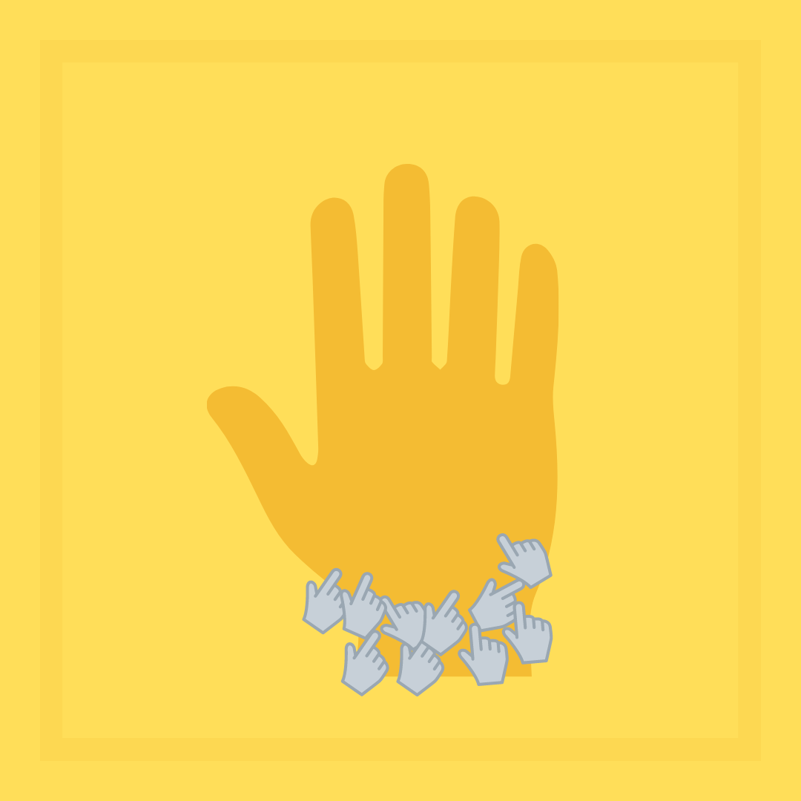
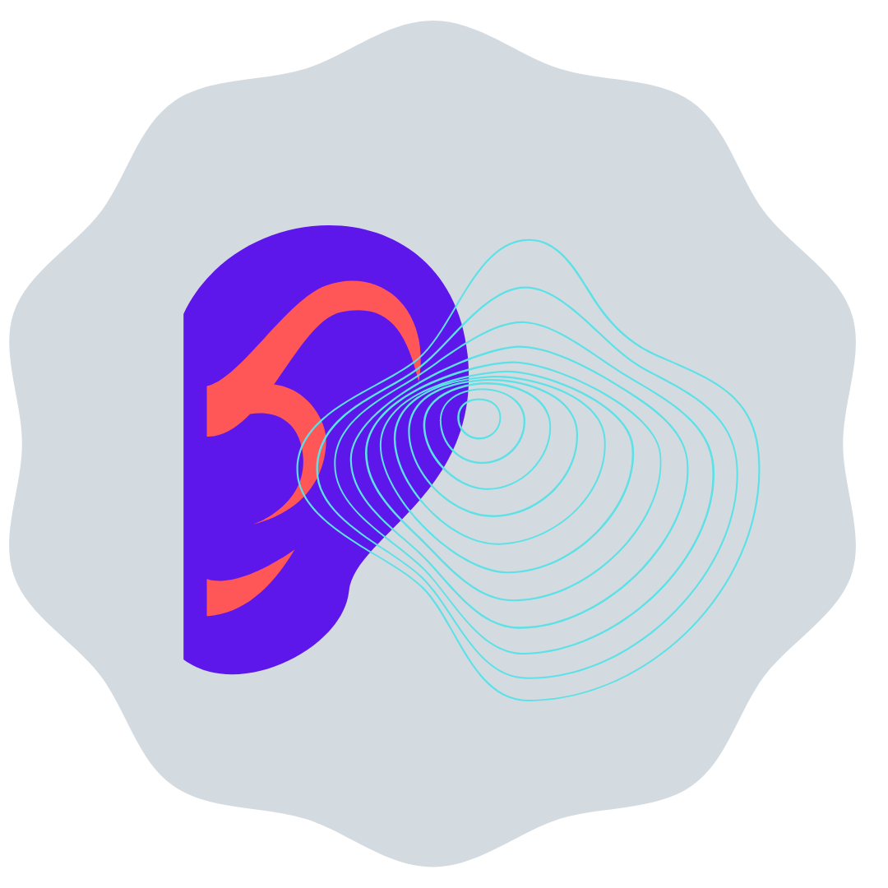
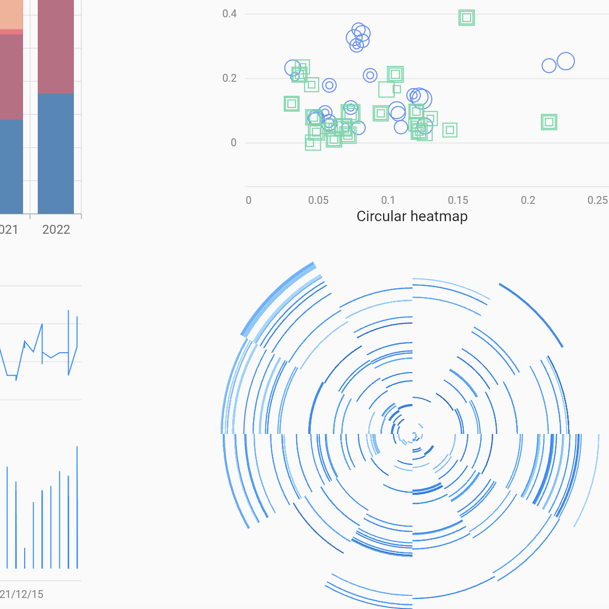
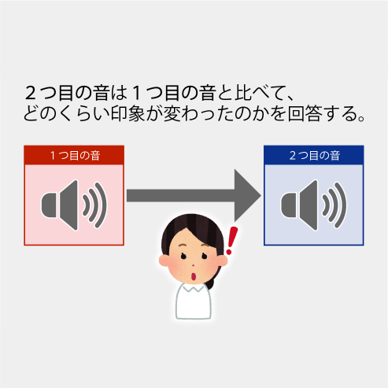
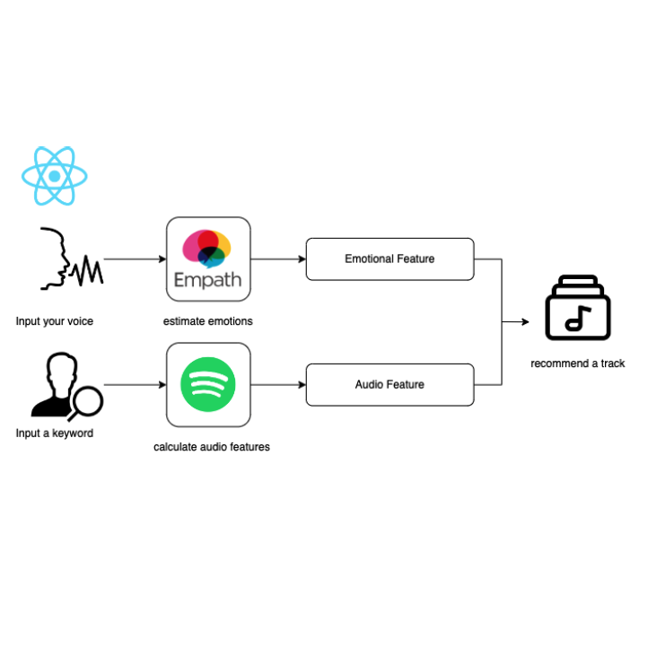

Introduction
Education
Projects
Prizes
Publications
Contact
Redhoshi's Portfolio
University of Tsukuba
Laboratory for Sound and People with Computing
Education
【2018 ~ 2022】 University of Tsukuba Bachelor : media art and science technology
【2022 ~ 202x】 University of Tsukuba Master : Informatics
【2023 ~ 2024】 Brandenburg University of Technology Master (exchange student) : Artificial Intelligence
Projects
Development with Flutter

Profession of Teaching

The Research of music perception for hearing impaired people

Graph Visualization using Spotify API

Simulated hearing loss experiment system for elderly people with hearing loss
Pfand Vending Machine

Development of a music recommendation system based on voice tone for depressed patients
Prizes
CPI OUTRESEARCH PROGRAM
Dean's Award of media art science and technology
Ishii Prize on ICT management Research Group
Publications
Shiho Akakis, Daichi Moriyama, Kenta Wakasa, Rumi Hiraga, Keiichi Yasu, Keiji Tabuchi, and Hiroko Terasawa. 2021. Consideration on the Difficulty of Timbre Identification of Musical Instrument Sounds for Hearing Training of the Hearing Impaired,
The 3rd Japan-Taiwan Symposium on Psychological and Physiological Acoustics Jointly held withASJ Auditory Research Meeting (non-peer reviewed), 2021-11
赤木志帆, 森山大地, 若狭健太, 平賀瑠美, 安啓一, 田渕経司, 寺澤洋子, 聴覚障害者の楽器音認知に関する検討-楽器分類に着目して- ,情報処理学会アクセシビリティ研究会(AAC), 2022-3
情報処理学会アクセシビリティ研究会 第18回研究会 (査読なし)
Shiho Akaki, Rumi Hiraga, Keiichi Yasu, Keiji Tabuchi, and Hiroko Terasawa, Design and Evaluation of Instrument Sound Identification Difficulty for the Deaf and Hard-Of Hearing
Asia Pacific Signal and Information Processing Association (APSIPA), 2022-11,
Shiho Akaki, Development of a music recommendation system based on voice tone for depressed patients (in Japanese, non-peer review)
ICT Management Research Group 2023
赤木志帆, 山岸慎平, 古川茂人, 寺澤洋子:オンライン聴覚実験における再生環境の違いが両耳ピッチ知覚に及ぼす影響, 日本音響学会2024年秋季研究発表会講演論文集,pp.891-894, 2024, (査読なし)